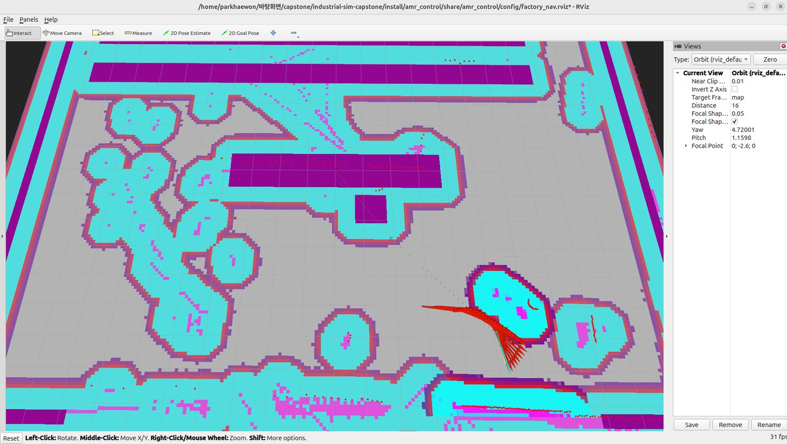
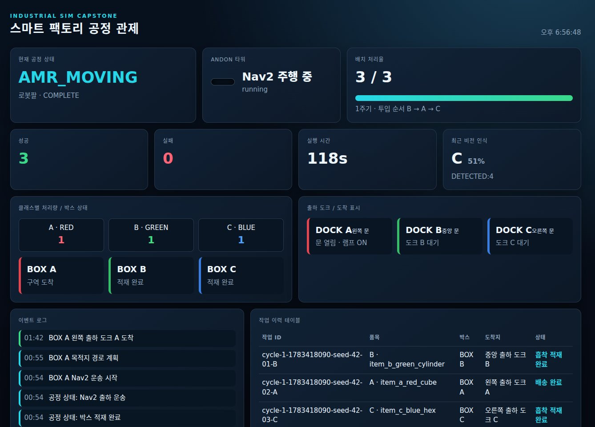
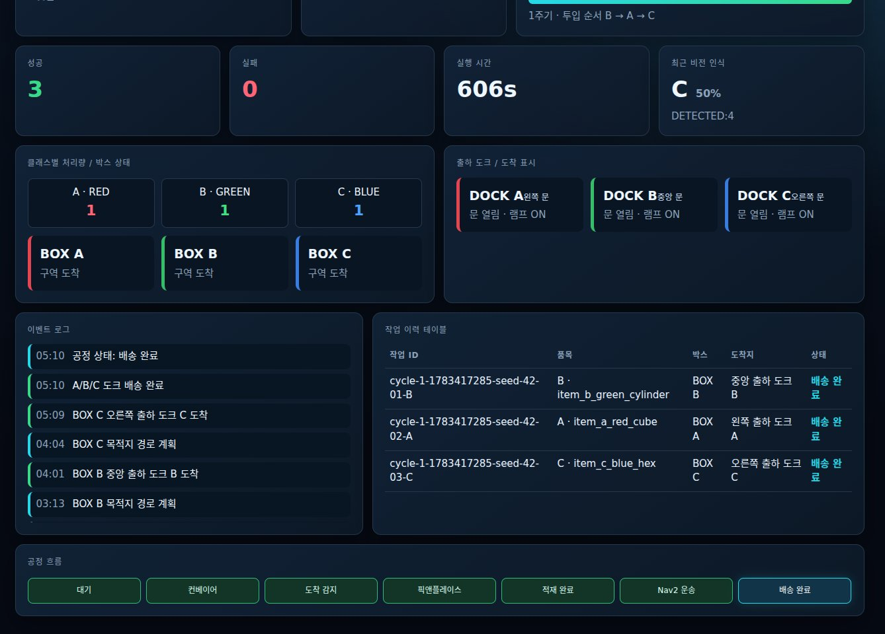

AI 캡스톤디자인 · 개인 프로젝트
Industrial Sim Capstone · 스마트 팩토리 물류 시뮬레이션
Gazebo와 ROS 2 위에서 컨베이어 공급, RGB-D 비전 분류, 로봇팔 Pick & Place, Nav2 AMR 운송을 하나의 공정 상태 머신으로 통합했습니다. 실물 장비 없이 공장 물류 사이클 전체를 처음부터 끝까지 재현합니다.
00 / DEMO
시연 영상
01 / BACKGROUND
문제 배경
스마트 팩토리의 컨베이어, 로봇팔, 비전 시스템, 무인운반로봇(AMR)은 벤더와 제어 방식이 제각각입니다. 그래서 이들을 하나의 공정 흐름으로 묶어 검증하는 일 자체가 비싸고, 실물 장비 없이는 실험하기 어렵습니다.
- 장비 없이는 검증 불가. 로봇팔·AMR·컨베이어를 모두 갖추기 전에는 전체 물류 공정을 확인할 방법이 없습니다.
- 통합 시점의 숨은 오류. 장비 하나하나는 정상이어도 신호를 주고받는 타이밍이 어긋나면 전체 공정이 멈춥니다.
- 예외 상황 재현의 위험. 장애물 회피, 위치 추정 실패, 배송 재시도는 실제 환경에서 반복 재현하기 위험하고 번거롭습니다.
이 프로젝트는 물리 시뮬레이터(Gazebo)와 ROS 2 표준 인터페이스만으로 공장 물류 사이클 전체를 재현하고, 같은 시드를 넣으면 평가자가 같은 결과를 반복해서 확인할 수 있게 만드는 것을 목표로 했습니다.
02 / SYSTEM
공정 흐름
① 컨베이어 공급
시드 기반 생성기가 A(빨강 큐브)·B(초록 원기둥)·C(파랑 육각기둥)의 투입 순서를 재현 가능하게 만들고, 컨베이어는 물품이 픽업 지점에 오면 자동으로 멈춥니다.
② RGB-D 비전 분류
OpenCV HSV 색상 분할과 깊이 이미지로 물품을 분류하고 3차원 좌표와 신뢰도를 계산합니다. 논리 카메라를 함께 써서 인식이 늦어도 정지 위치를 보장합니다.
③ 로봇팔 Pick & Place
회전·승강 관절의 실측값으로 목표 도달을 판정하는 상태 머신이 흡착 → 상승 → 회전 → 하강 → 분리 → 복귀 순서로 물품을 클래스별 상자에 적재합니다.
④ Nav2 AMR 운송
적재가 끝난 상자가 LiDAR·AMCL로 위치를 추정하고 Nav2로 출하 도크까지 주행합니다. 시간 초과, 정체, 도달 오차가 생기면 최대 2회 자동으로 재시도합니다.
전체 공정은 factory_manager가 각 장비의 완료 신호를 모아 IDLE → CONVEYOR_RUNNING → ITEM_READY → PICKING → BOX_READY → AMR_MOVING → DELIVERED 순서로 관리합니다. 배송이 끝나면 상자가 복귀하고 다음 배치가 자동으로 시작되어, 사용자 개입 없이 생산 사이클이 반복됩니다.

03 / IMPLEMENTATION
핵심 구현
- AMCL 위치 검증. 각 상자의 360도 LiDAR와 휠 오도메트리를 AMCL에 연결하고, Gazebo 기준 위치에서 크게 벗어난 추정값은 버리고 안정적인 후보만 받아들입니다.
- 동적 장애물 회피 데모. 주행 경로 근처로 팔레트 장애물을 옮겨, Nav2가 LiDAR로 장애물을 인식하고 costmap을 갱신해 경로를 다시 계획하는 과정을 RViz2에서 보여 줍니다.
- 브라우저 관제 대시보드. 외부 웹 프레임워크 없이 Python 표준 라이브러리(
http.server)만으로 공정 상태, 비전 신뢰도, 상자별 적재·배송 상태, 도크 상태, 이벤트 로그를 실시간으로 보여 줍니다. - 재현성과 테스트. 원버튼 실행 스크립트(
run-demo.sh)와 시드 고정으로 같은 시연을 반복할 수 있고, 6개 패키지에 pytest 단위 테스트 20개를 두었습니다.


04 / RESULTS
실측 결과 (시드 42)
- 배송 성공률: A/B/C 3/3 배송 완료, 실패 0건
- 배치 처리 시간: 적재 완료 118초, 전체 배송 완료 606초
- 재시도: 0회 (최대 2회 정책), 동적 장애물 상황에서 경로 재계획 확인
- 비전 신뢰도: 50~60% (HSV 색상 분할 기반)
- 자동 테스트: 20/20 통과

성능 수치는 시드 42, 단일 PC 기준이며 실행 환경 성능에 따라 달라질 수 있습니다.
05 / LIMITATIONS
한계와 개선 방향
- 비전은 HSV 색상 분할 기반이라 신뢰도가 50~60% 수준입니다. 딥러닝 객체 인식(YOLO 등)으로 고도화할 수 있습니다.
- AMR은 상자별로 한 대씩 순차 운송합니다. 다중 AMR 병렬 주행, 교차로 충돌 회피, 동적 스케줄링은 다음 과제입니다.
- 실제 PLC, 카메라, 로봇팔 드라이버 연동은 범위 밖이지만, 표준 ROS 2 인터페이스로 설계해 확장할 수 있게 했습니다.